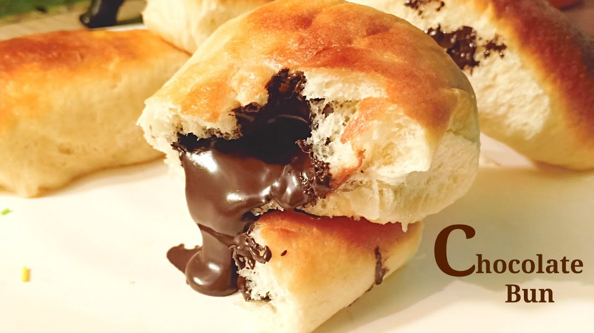

Red Spaghetti
home

Description
Yeast is the love of my life and you'll never find me without a stash at home.
I like making all types of baked goods - sweet, savory, anything goes.
I love the final product, the wonderful golden color, the delicious flavor.
This time I went for something sweet with a lot of chocolate, and all wrapped in an irresistible bun. Chocolate and yeast pair wonderfully together.
Just the smell sends me to seventh heaven.
If you ask one of my sons what cake is his favorite, he'll undoubtedly say yeast. The kid simply loves anything baked with yeast and prefers it over any other cake.
Here's a little tip - I make these buns and freeze them and then take one out every morning and put it in his lunchbox for school.
Ingredients
- 500 g flour (half a kilo)
- 25 grams fresh yeast
- Or 11 grams dry yeast (1 Tbsp)
- 100 grams sugar (1/2 cup)
- 240 ml lukewarm water (1 cup)
- 2 tsp salt
- 60 ml oil (1/4 cup)
- 1 egg yolk
- 1 whole egg
- 1 egg, beaten, for the egg wash
For the filling:
Syrup: (optional)
- 100 grams sugar (1/2 cup)
- 120 ml water (1/2 cup)
Steps
- Place all the ingredients in the bowl of a mixer and process on low speed until you get a smooth and soft dough. Cover and let rise for 1.5-2 hours.
- To make knots:
Divide the dough into 16 pieces. Roll each piece out, spread with chocolate but leave the edges and the bottom part of the circle clean of chocolate. Roll it up and stretch out the roll so it is 16-17 cm long. Tie the dough in a knot and arrange on a baking tray with spaces in between them.
- If you prefer to make balls instead of knots:
Divide the dough into 16 balls and roll each ball into a circle. Place a teaspoon of chocolate spread in the center of each circle, lift up the edges and close, pinching the sides closed to form a ball. Place on a baking tray with the pinched tip facing downward.
- Let rise for around 15 minutes.
- Heat an oven to 180°C. Brush the buns with the beaten egg and bake for 20 minutes.
- prepare the syrup:
Heat the sugar and water together in a pan for several minutes until well combined and syrupy and brush the tops of the buns as soon as they come out of the oven.